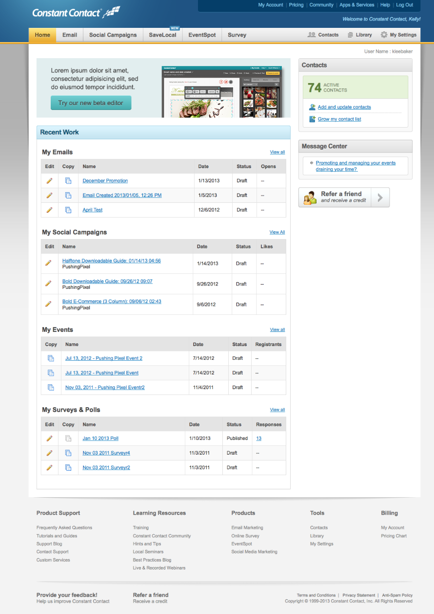
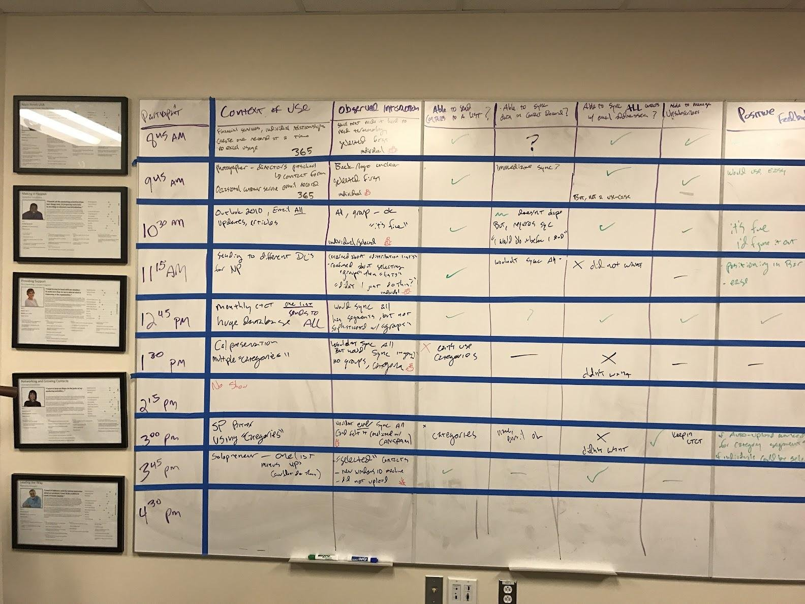
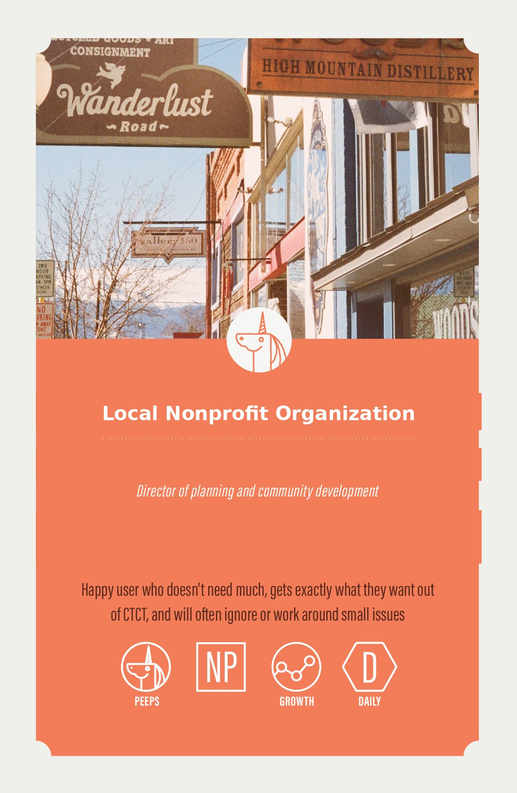
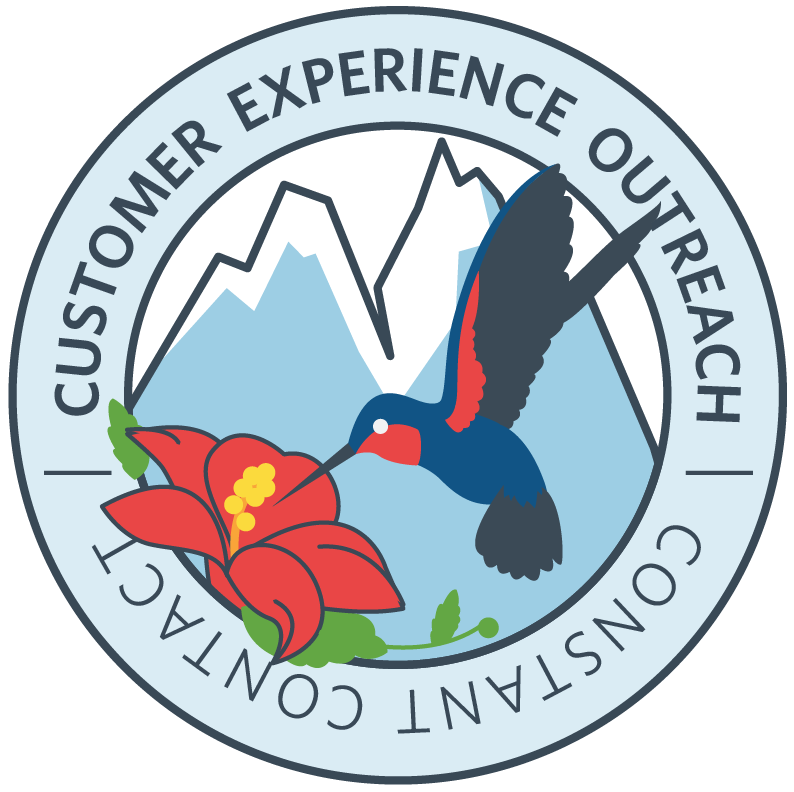
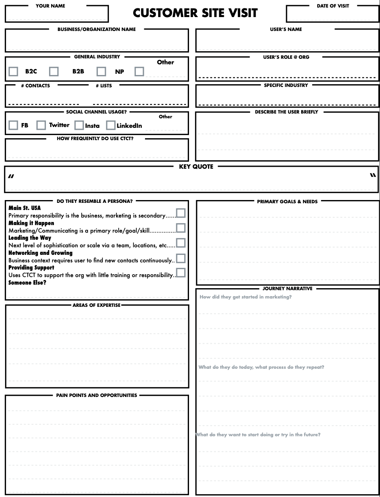
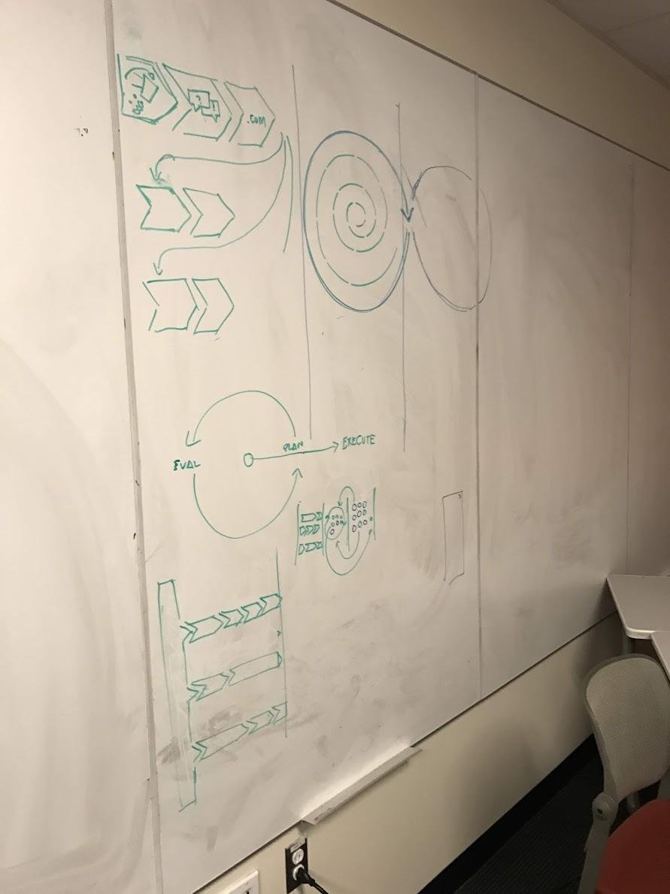
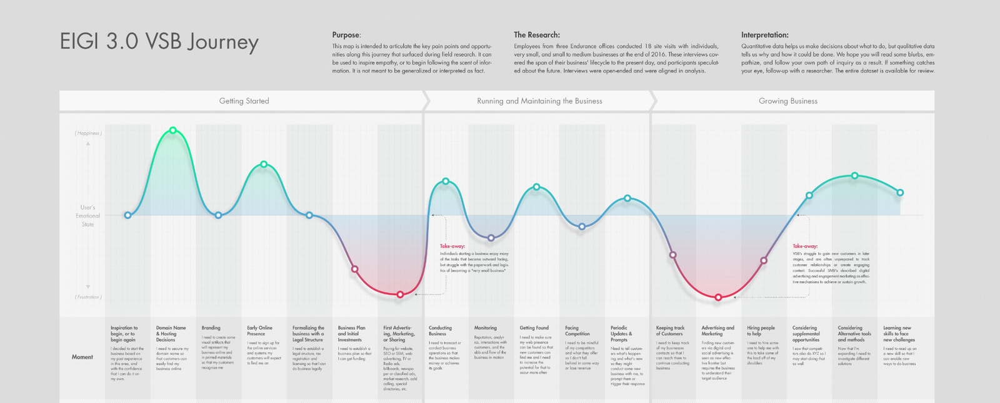

Case study · Constant Contact → Endurance International · UX Research Lead
Building a Research Practice from Zero
Two connected research efforts, years apart, at the same company as it grew from a single product team into a multi-brand portfolio. The first stood up foundational persona research where none existed. The second scaled that same practice into a company-wide customer journey.
← All case studiesAct One
Persona Definition Research
Context
First dedicated research role at Constant Contact. The UX team was maturing but had no foundational research function, only prior usability testing. Product management asked for a new, more effective convention: the existing persona set had been contracted out, left incomplete, and named things like “Betty the Bead Lady.” It was heavy on demographics and light on insight, and nobody was using it.

Process
- Recruited 20–30 users across multiple states for contextual inquiry, using an apprentice-to-mastery model
- Ran participant-led, probing field interviews with a consistent note-taking framework
- Facilitated a full-team affinity diagramming day to synthesize findings
- Ran a recap and empathy workshop with the broader UX team
- Landed on a new naming convention by team consensus: behavior-based rather than role-based personas, an early precursor to Jobs-to-be-Done thinking


Outcome
Personas moved from unused to actively adopted: they showed up in kickoff docs, recruitment criteria, and eventually a self-identification mechanic in-product, plus an ongoing site-visit library fed by an intake form. A new “customer outreach” field research function was stood up as a direct result, and the tone around research shifted toward genuine curiosity about users rather than an afterthought.

Act Two
Strategic Field Research & Journey Mapping
Context
Constant Contact was acquired by Endurance International, a portfolio of brands including HostGator, Bluehost, and Domains.com. UX was centralized, but each business unit still had its own contributors, and there had been no foundational research into what users across the portfolio actually shared. Leadership wanted alignment on a company-wide vision, and centralized UX was tasked with a large-scale, generative customer journey.
Process
- Kicked off with stakeholder facilitation: a “Hopes + Fears” dialogue, alignment on data collection goals, and interview training for the PM and designer contributors who would help collect data
- Ran an 18-site-visit data collection effort across three offices’ customers, using a standardized intake instrument
- Facilitated stakeholder synthesis: frequency and priority scoring, then dot-voting to identify the top two cross-business-unit challenges
- Synthesized findings using a “10 second / 1 minute / 10 minute” narrative structure, a technique for telling the same story at three levels of depth
- Produced a single unifying journey map spanning the shared customer lifecycle


Outcome
The map was shared broadly at a company all-hands, printed, and displayed in offices. Each PM got an individual per-phase report tied to their area. It left a lasting practice, not just a one-time deliverable: customer-centric research and design became something teams looked to instead of skipped.

Key Decisions
Behavior-based personas, not role-based
The team could have kept demographic-heavy personas and just renamed them. Choosing to redefine personas by behavior instead, an early precursor to Jobs-to-be-Done thinking, is why they actually got used.
A three-depth synthesis structure
Stakeholders needed to consume the same findings at different levels of urgency: a “10 second” headline, a “1 minute” summary, and a “10 minute” deep dive, all from the same underlying data.
Both efforts share a shape: research earns adoption by being built with the people who’ll use it, not delivered to them. Personas and journey maps are only as durable as the process that produced them.